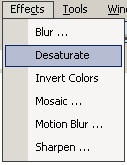

Desaturate Effect
|
 The Desaturate Effect (Effects-->Desaturate) removes all color from the layer and leaves only a black and white image. This tool is most commonly used to convert color images to grayscale. |
Notice: The Desaturate Effect, along with the other effects will operate only in a selected region. If no region is selected (as in the image below), the effect is applied to the entire layer. Depending on the settings, the image size, and the internal clock speed of the CPU, these effects may take a considerable time to complete. |
An image altered by the Desaturate Effect:
|
|
|
| Original Image | Desaturated Image |